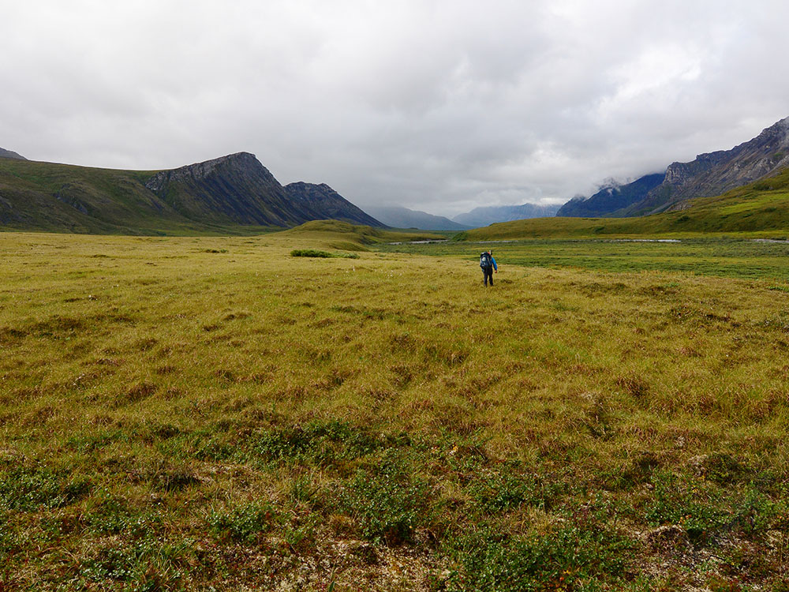
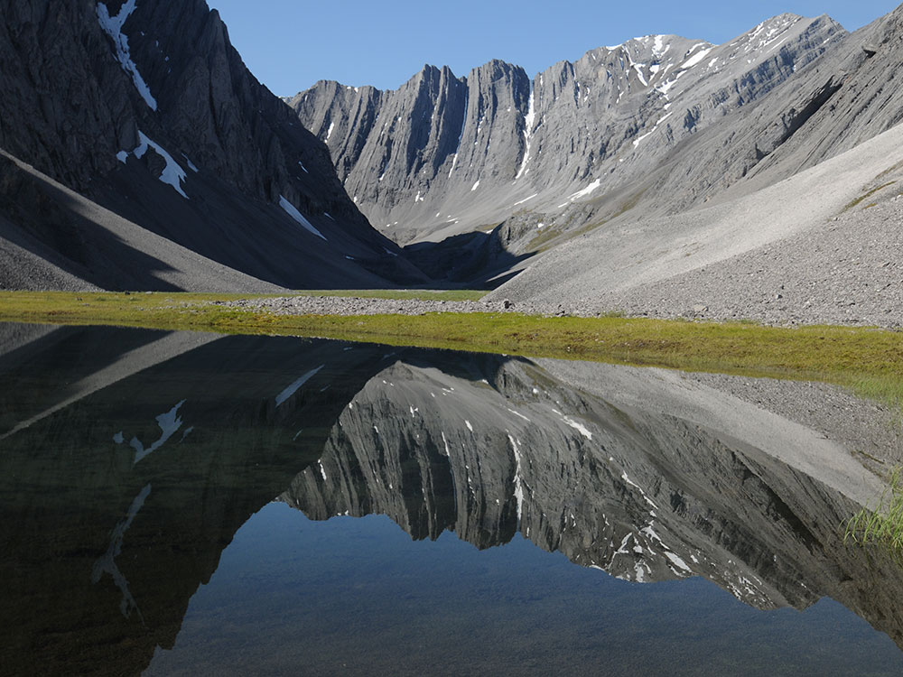
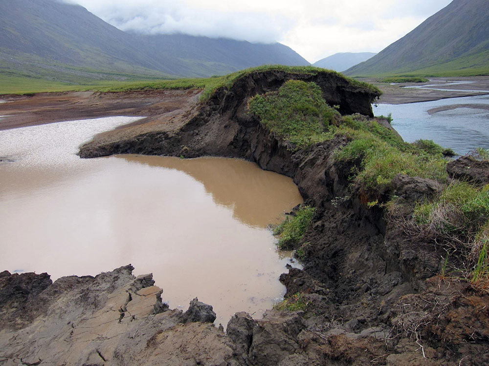
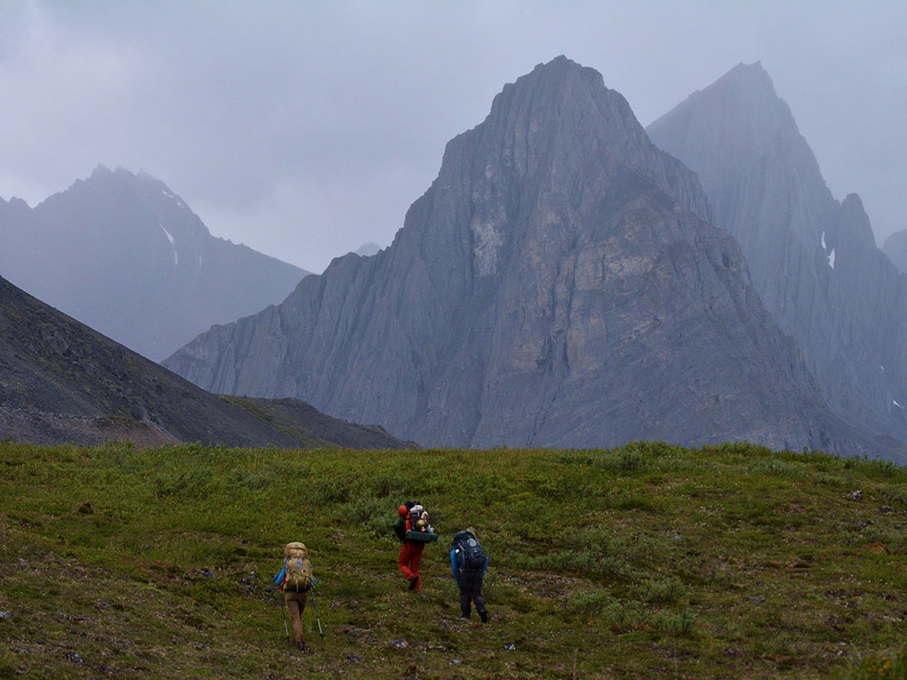

Northernmost national park in the United States, situated entirely north of the Arctic Circle, the park is the second largest in the US
General Information
Arctic Interagency Visitor Center (Coldfoot): Late May through early September
Bettles Ranger Station: Summer
Fees apply for flights and guided trips
How to Get There
From Fairbanks, AK (~250 mi to eastern park boundary): Drive north on AK-2 and AK-11 (Dalton Highway) approximately 175 miles to Coldfoot, where the Arctic Interagency Visitor Center is located, then arrange a bush plane charter into the park as no roads exist within the park itself.
Overview
Gates of the Arctic National Park and Preserve protects about 8.4 million acres of the central Brooks Range in northern Alaska, entirely north of the Arctic Circle. It is the northernmost national park in the United States, the second largest after Wrangell-St. Elias, and usually the least visited. The park has no roads, trails, campgrounds, or visitor facilities within its boundaries. Instead, it offers endless wilderness: jagged granite peaks like the Arrigetch Peaks, glacier-carved valleys, Arctic tundra, boreal forest, and six Wild and Scenic Rivers. Its name comes from Frigid Crags and Boreal Mountain, two peaks on either side of the North Fork of the Koyukuk River that explorer Robert Marshall called the "gates" to the Arctic.
The Brooks Range has been home for thousands of years to the Nunamiut Iñupiat people, who live today in the village of Anaktuvuk Pass, and to the Koyukon Athabascans to the south. Residents of local communities still hunt, fish, and gather in the park. In the 1930s, Marshall explored the region and argued that northern Alaska should be kept as wilderness. Gates of the Arctic became a national monument in 1978 and a national park and preserve in 1980. Only a few thousand people visit each year. They come for multi-day backpacking trips, river floats, fishing, and climbing in one of the last great untouched wildernesses in North America, often without seeing another person for days.
Park Sections
Without roads or developed areas, the park is best thought of by region. The eastern side, along the Dalton Highway near Coldfoot and Wiseman, is the only part of the park that can be reached on foot from a road. It includes the North Fork of the Koyukuk River, Frigid Crags, and Boreal Mountain. The central region includes the Alatna and John Rivers, the Arrigetch Peaks, and the village of Anaktuvuk Pass, which sits on the continental divide and is the only community within the park. The western region holds the headwaters of the Noatak and Kobuk Rivers and Walker Lake. The gateway communities are Bettles and Coldfoot to the south and east, Anaktuvuk Pass in the heart of the range, and, for the western park, Kotzebue and Ambler.
Sightseeing and Exploring the Park
Gates of the Arctic has no scenic drives or overlooks inside the park. The closest thing is the Dalton Highway, which runs just outside the park's eastern edge and crosses the Brooks Range at Atigun Pass, offering dramatic views of the mountains. The best way to see the park's scale is on a flightseeing trip from Fairbanks, Coldfoot, or Bettles. Some tours land at Anaktuvuk Pass or on a remote lake, letting visitors set foot in the park for a few hours. For most visitors, though, the park is experienced on the ground, from a tent on a gravel bar or a raft on a wild river.
Hiking
There are no established trails in the park, so all hiking is cross-country and only for experienced, self-sufficient wilderness travelers. Hikers must cross tussock tundra, brush, boulder fields, and cold, fast rivers, and they must navigate with maps, a compass, or GPS. Popular backpacking areas include the granite spires of the Arrigetch Peaks, reached by floatplane to nearby lakes or rivers, the valleys around Anaktuvuk Pass, the Oolah Valley, and the "Gates" themselves along the North Fork of the Koyukuk. Shorter day hikes into the park's eastern edge are possible from the Dalton Highway near Wiseman. Bear-resistant food containers are required, and visitors are encouraged to attend a backcountry orientation before their trip.
Other Activities
River trips are one of the best ways to explore the park. Its six Wild and Scenic Rivers are the Alatna, John, Kobuk, Noatak, North Fork Koyukuk, and Tinayguk, and they offer multi-day rafting, canoeing, and packrafting trips, with bush planes dropping paddlers off upstream and picking them up downstream. Anglers fish for Arctic grayling, Arctic char, lake trout, and sheefish. The Arrigetch Peaks draw rock climbers to their remote granite walls. Sport hunting is allowed in the preserve. In fall and winter, the communities of Coldfoot and Wiseman are excellent bases for watching the northern lights, and in late winter and spring, a few adventurers travel through the park by ski or dog sled. Many visitors hire licensed guides or outfitters to handle logistics and safety.
Flora and Wildlife
Gates of the Arctic protects a vast, intact Arctic ecosystem. The Western Arctic caribou herd, one of the largest in North America, migrates through the western part of the park in spring and fall, and smaller herds roam the central range. Other wildlife includes grizzly and black bears, wolves, Dall sheep, moose, wolverines, lynx, red and Arctic foxes, and a small number of muskoxen. In summer, migratory birds arrive from around the world to nest. South of the continental divide, spruce and birch forest covers the valleys. North of the divide, the land opens into treeless tundra. The ground is underlain by permafrost, and in summer the tundra blooms with wildflowers and berries.
Access
Most visitors begin in Fairbanks, which has the closest major airport. From there, scheduled flights serve the small communities of Bettles, Coldfoot, and Anaktuvuk Pass. Air taxis from Bettles and Coldfoot then fly visitors into the park, landing on lakes, rivers, or gravel bars near their planned route. Travelers can also drive the Dalton Highway about 250 miles north from Fairbanks to Coldfoot, a rugged, mostly gravel road built for the Trans-Alaska Pipeline. Many rental car companies do not allow their cars on this road. From the highway near Wiseman, hikers can walk west into the park. Weather often delays flights, so visitors should plan extra days for their trip.
Seasons
The main season is June through August, when rivers are free of ice, the sun barely sets (or does not set at all in June), and the tundra is green. Mosquitoes are intense from late June through July. By mid- to late August, the tundra turns red and gold, berries ripen, caribou begin to migrate, and the first snow often arrives in the high country by early September. Winter is long, dark, and extremely cold, with temperatures that can drop to -40°F or below, but it brings spectacular northern lights. Late winter and early spring, with longer days and stable snow, are good for ski and dog sled expeditions.
Camping and Lodging
There is no lodging and there are no campgrounds inside the park, so visitors camp in the backcountry, choosing their own sites and following Leave No Trace practices. Lodging in the gateway communities is limited and rustic. In Bettles, there is a historic lodge, and in Coldfoot, the truck stop at Coldfoot Camp offers rooms and meals. The tiny community of Wiseman has a few cabins and bed-and-breakfasts. A few privately owned wilderness lodges near the park offer fly-in stays. The BLM's Marion Creek Campground near Coldfoot serves Dalton Highway travelers. Fairbanks has the widest range of hotels and is where most trips begin and end.
Visitor Centers
The park has no visitor centers within its boundaries, but several are nearby. The Arctic Interagency Visitor Center in Coldfoot, along the Dalton Highway, is open in summer and offers exhibits, evening programs, and backcountry orientations. The Bettles Ranger Station and Visitor Center provides orientations and information for visitors flying into the park from Bettles, and a ranger station serves Anaktuvuk Pass. In Fairbanks, the Morris Thompson Cultural and Visitors Center, open all year, has exhibits on Interior and Arctic Alaska and information on the park.
Things to Do
Experience One of America's Most Remote National Parks
Gates of the Arctic National Park and Preserve encompasses more than 8 million acres of wilderness in northern Alaska, making it the second-largest national park in the United States. The park contains no roads, no developed campgrounds, and no established trails, offering visitors a rare opportunity to experience true Arctic wilderness largely unchanged by human development.
Cross the Arctic Circle
Much of the park lies north of the Arctic Circle, where visitors can experience the unique phenomena of the Midnight Sun in summer and extended darkness during winter. This remote setting provides an authentic glimpse into life in the Far North.
Explore the Brooks Range
The park protects a vast section of the Brooks Range, one of North America's most spectacular mountain systems. Jagged peaks, broad valleys, alpine tundra, glaciers, and wild rivers create some of Alaska's most breathtaking scenery.
Visit the Gates of the Arctic
The park's namesake feature, the Gates of the Arctic, was named by wilderness advocate Robert Marshall for the dramatic mountain peaks Frigid Crags and Boreal Mountain that frame the North Fork of the Koyukuk River. This iconic landscape symbolizes the grandeur and remoteness of the region.
Observe the Western Arctic Caribou Herd
The park serves as critical habitat for large migratory caribou herds. Depending on the season, visitors may witness caribou moving across the tundra in one of North America's great wildlife migrations.
Look for Arctic Wildlife
Wildlife viewing opportunities include grizzly bears, black bears, wolves, moose, Dall sheep, wolverines, foxes, beavers, and numerous bird species. Because the park's ecosystems remain largely intact, wildlife populations thrive across the wilderness landscape.
Experience Wilderness Backpacking
Backpacking is among the park's most popular activities. Since there are no designated trails, visitors navigate across tundra, mountain passes, river valleys, and alpine terrain while creating personalized routes through the wilderness.
Take a River Expedition
Wild rivers such as the Noatak, Alatna, John, Kobuk, and North Fork Koyukuk provide outstanding opportunities for rafting, canoeing, and multi-day float trips. These expeditions allow visitors to access some of the park's most remote and scenic areas.
Visit Anaktuvuk Pass
Located within the Brooks Range, Anaktuvuk Pass is the only community within park boundaries. Home to the Nunamiut Iñupiat people, the village offers insight into the cultural traditions and history of Arctic Alaska.
Enjoy the Midnight Sun
During summer, the sun remains above the horizon for extended periods, allowing visitors to hike, fish, camp, and photograph the landscape at virtually any hour of the day.
Top Routes and Backcountry Areas
Arrigetch Peaks Route
Length: Typically 10 to 30+ miles depending on itinerary
Elevation Gain: Significant
Difficulty: Strenuous
The Arrigetch Peaks are among the most dramatic mountains in Alaska. Backpackers travel through alpine valleys and rugged terrain to reach massive granite spires that rise dramatically above the surrounding wilderness. This is considered one of the park's premier backpacking destinations.
North Fork Koyukuk River Corridor
Length: Varies by itinerary
Elevation Gain: Minimal while floating
Difficulty: Moderate
This scenic river corridor passes through the area that inspired the name Gates of the Arctic. Visitors experience mountain scenery, wildlife viewing opportunities, and classic Brooks Range landscapes.
Noatak River Float Trip
Length: Typically 200 to 400+ miles depending on route
Elevation Gain: Minimal while floating
Difficulty: Moderate
The Noatak River is one of the longest undammed rivers in the United States. Multi-day rafting expeditions traverse vast wilderness landscapes while providing excellent opportunities for wildlife viewing and photography.
Alatna River Route
Length: Typically multi-day expedition
Elevation Gain: Minimal while floating
Difficulty: Moderate
The Alatna River is a favorite among wilderness travelers because it combines beautiful Brooks Range scenery, abundant wildlife, and excellent opportunities for both rafting and backpacking.
Anaktuvuk Pass Backcountry Routes
Length: Varies from several miles to multi-week expeditions
Elevation Gain: Varies
Difficulty: Moderate to Strenuous
The area surrounding Anaktuvuk Pass provides access to broad tundra valleys, mountain passes, wildlife habitat, and traditional travel routes used by Indigenous peoples and migrating caribou herds.
Given the complete lack of infrastructure, most visitors arrange trips through local air taxi services or licensed guiding companies based in Bettles or Coldfoot, which can handle logistics like flights, permits, and bear-safety planning. Because weather in the Brooks Range can change rapidly, it's wise to build extra time into any itinerary in case flights are delayed.
This article uses material from the Wikipedia article "Gates of the Arctic National Park and Preserve", which is released under the Creative Commons Attribution-Share-Alike License 3.0
This article uses material from nps.gov "Gates of the Arctic National Park and Preserve" and from Travel Alaska "Where to Stay in Alaska's National Parks"



.jpg){kind=link}

.jpg){kind=link}
